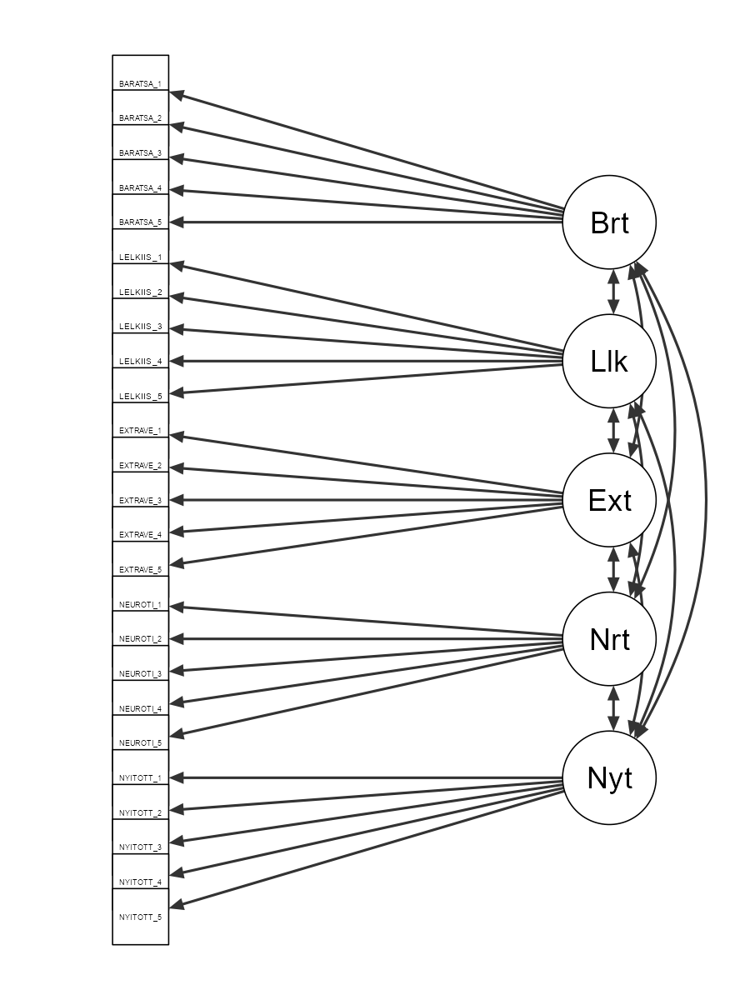
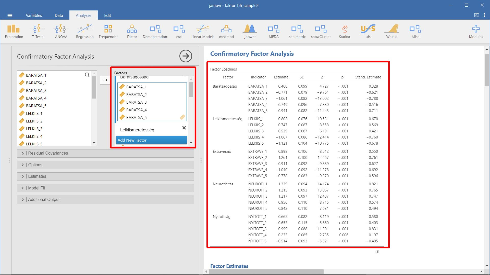
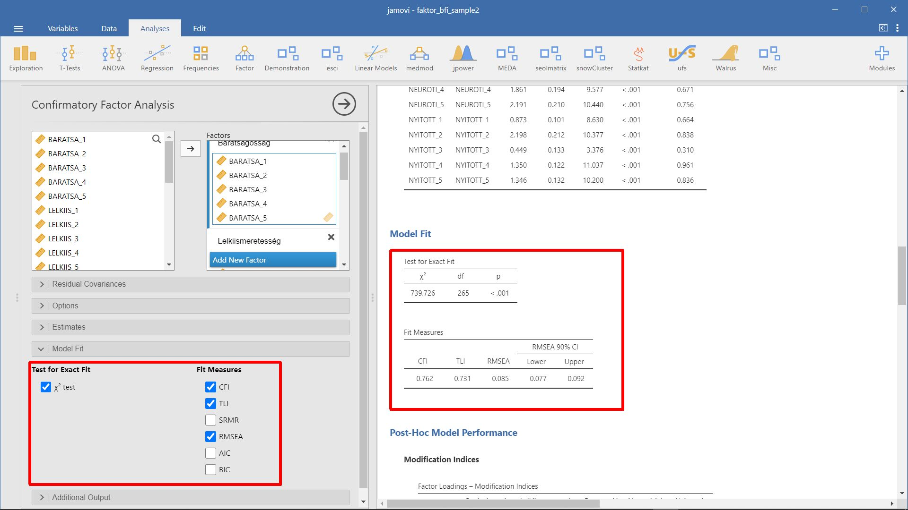
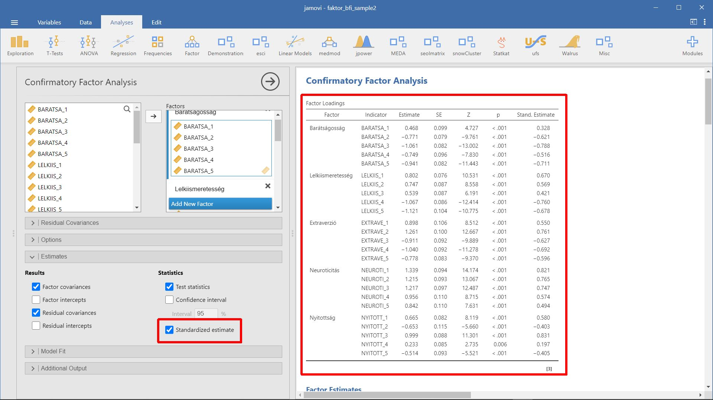
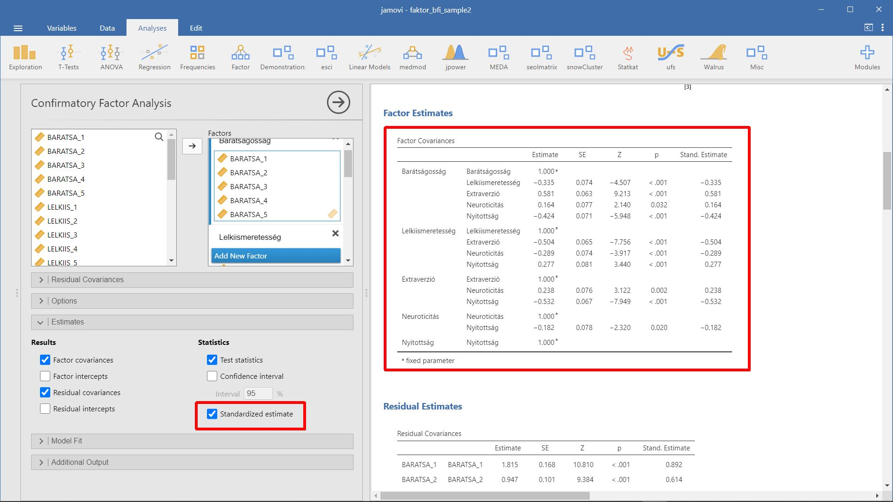
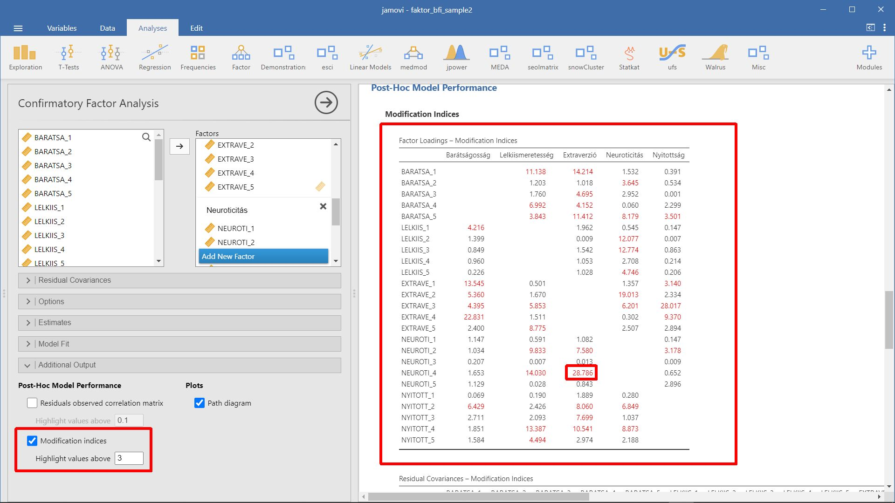
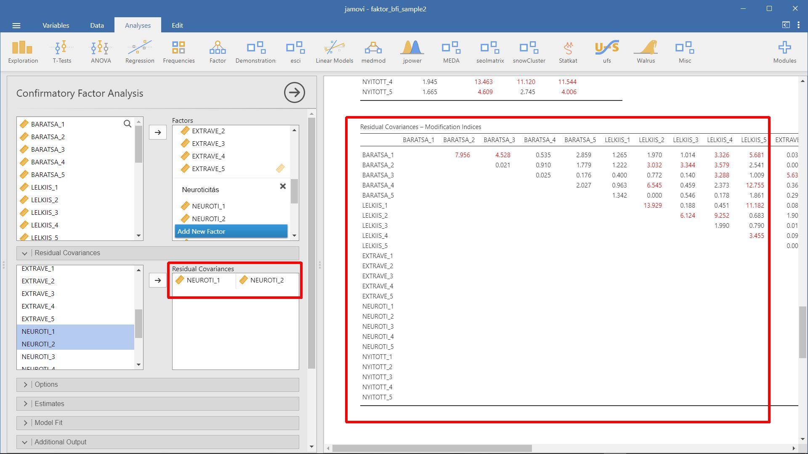

5 Megerősítő faktorelemzés
- A fejezet forrása: NavarroFoxcroft2022 15.3 Confirmatory Factor Analysis
- Kapcsolódó jamovi állomány:
faktor_bfi_sample2.omv
A feltáró faktorelemzés segítségével könnyen azonosíthatók a mögöttes, látens faktorok. Sok esetben azonban azt szeretnénk látni, hogy az épp rendelkezésre álló faktorok helytállóak-e, tudjuk-e igazolni adatainkkal a létezésüket. Ezt a szigorúbb ellenőrzést megerősítő faktorelemzésnek (Confirmatory Factor Analysis, CFA) nevezzük. Célja egy előre meghatározott látens faktorstruktúra megerősítése: megnézzük, hogy az adatok mennyire illeszkednek az előre megadott faktorstruktúrára. Abban az értelemben megerősítő az elemzés, hogy megnézzük, mennyire erősítik meg a megfigyelt adatok az előre meghatározott modellt.
A 4.11 fejezetben már foglalkoztunk a személyiség 5 faktoros modelljével. Ott feltáró elemzéssel sikerült azonosítani azt az 5 faktort, amelyre a 25 személyiségitem épp a megfelelő módon töltött (egyetlen item kivételével).
Most a célünk az 5 faktoros modell megerősítése lesz. A bfi_sample2.xlsx állományt fogjuk használni. Rendelkezésre áll 250 vizsgálati személy adata, akik a 25 személyiségitemre adtak választ. Minden item csoportosítható valamely személyiségfaktor egyikébe, méghozzá ötös csoportokban. Az adatok visszaigazolják az 5 faktoros struktúrát? A következő struktúráról van szó:

Barátságosság faktor itemei:
- BARATSA_1
- BARATSA_2
- BARATSA_3
- BARATSA_4
- BARATSA_5
Lelkiismeretesség
- LELKIIS_1
- LELKIIS_2
- LELKIIS_3
- LELKIIS_4
- LELKIIS_5
Extraverzió faktor itemei:
- EXTRAVE_1
- EXTRAVE_2
- EXTRAVE_3
- EXTRAVE_4
- EXTRAVE_5
Neuroticitás faktor itemei:
- NEUROTI_1
- NEUROTI_2
- NEUROTI_3
- NEUROTI_4
- NEUROTI_5
Nyitottság faktor itemei:
- NYITOTT_1
- NYITOTT_2
- NYITOTT_3
- NYITOTT_4
- NYITOTT_5
A modellünk felépítése előtt néhány tényezőt érdemes figyelembe venni:
A látens tényezők korrelációja. Ahogy korábban említettük, a pszichológiában a konstruktumok legtöbbször összefüggenek egymással, azaz esetünkben a személyiségfaktorok korrelálhatnak egymással. Modellünkben meg kell engednünk, hogy ezek a látens tényezők együtt változzanak.
Hibatagok korrelációja. A itemek értékeinek meghatározása bizonyos hibával történik a modellben. Ezek a hibák korrelálhatnak egymással? Meg kell vizsgálni, hogy van-e szisztematikus oka annak, hogy egyes hibák korrelálnak egymással. Egyelőre nincs olyan egyértelmű ok, amelyek igazolnák egyes hibák összefüggenek egymással.
5.1 Faktorstruktúra megadása
A jamovi-ban a Factor / Confirmatory Factor Analysis menüpontban kell felvinni a fenti struktúrát.

5.2 Eredmények értékelése
Az elemzés elvégzése után nézzük meg az eredményeket.
5.2.1 Illeszkedési mutatók vizsgálata
Az első dolog, amit meg kell nézni, a modellillesztés, mivel ez megmutatja, hogy a modellünk mennyire illeszkedik a megfigyelt adatokra. Számos módja van a modell illeszkedésének értékelésére.
Khí-négyzet próba. A khí-négyzet próbastatisztika kis értéke azt jelzi, hogy a modell jól illeszkedik az adatokhoz. Ebben az esetben a próba nem szignifikáns \((p>0,05)\). A modell illeszkedésének értékelésére használt khí-négyzet statisztika azonban meglehetősen érzékeny a minta méretére, azaz nagy minta esetén a modell és az adatok elég jó illeszkedése is szinte mindig szignifikáns próbastatisztikát eredményez.
CFI - összehasonlító illeszkedési mutató (Comparative Fit Index) - A CFI azt méri fel, hogy faktorstruktúra milyen mértékben reprodukálja a valós adatokon nyugvó kovarianciamátrixot egy független modellhez képest. A CFI mutatók értéke 0 és 1 közötti tartományba eshet, ahol az 1-hez közeli érték jelzi a szoros illeszkedést. Kezdetben a mutatók elfogadhatósági kritériumának 0,90-et adtak meg, de az utóbbi időkben inkább a 0,95-ot tekintik az elfogadhatóság alsó határának.
TLI - Tucker–Lewis-féle Illeszkedési mutató - A TLI a CFI-hez hasonló módon méri az illeszkedést, annyi különbséggel, hogy ez a mutató a modellben használt szabadságfokot is figyelembe veszi, így kiküszöböli a vizsgálati minta méretének befolyásoló szerepét. A TLI mutatók értéke 0 és 1 közötti tartományba eshet, ahol az 1-hez közeli érték jelzi a szoros illeszkedést. Kezdetben a mutatók elfogadhatósági kritériumának 0,90-et adtak meg, de az utóbbi időkben inkább a 0,95-ot tekintik az elfogadhatóság alsó határának.
RMSEA - a becslési hiba négyzetes átlagának gyöke (Root-Mean-Square Error of Approximation) - A Steiger-féle RMSEA mutatót a modell populációs kovariancia mátrixhoz viszonyított illeszkedésének becsléséhez használjuk. Az RMSEA az elemszámtól függetlenül hasonlítja össze, hogy a valós és az optimális paraméterekkel rendelkező hipotetikus modell kovarianciamátrixa milyen mértékben illeszkedik. Az RMSEA a modell takarékosságának megbízható jelzője, a komplex modellek hibás specifikálásának hatékony mutatója. Az RMSEA értéke is 0 és 1 közé eshet, itt azonban a kisebb, 0-hoz közel eső érték jelzi a jobb illeszkedést. Az RMSEA értékei 0,05-ig szoros illeszkedést jeleznek; 0,08-os értékig pedig megfelelő illeszkedést.
A saját eredményeinket szemlélve azt láthatjuk, hogy a khi-négyzet értéke nagy és nagyon szignifikáns. A mintánk mérete nem túl nagy, így ez valószínűleg rossz illeszkedést jelez. A CFI 0,762 a TLI pedig 0,731, ami rossz illeszkedést jelez a modell és az adatok között. Az RMSEA 0,085 90%-kos konfidencia intervallum 0,077 és 0,092, és ez megint nem jó illeszkedést jelez.

5.2.2 Faktorterhelések és faktorkovariancia becslése
Nézzük tovább a faktorterheléseket és a faktorkovariancia becsléseket. A táblázatokban látható a Z-statisztika és a p-érték mindegyik paraméterre azt jelzi, hogy ésszerűen járulnak hozzá a modellhez (azaz nem nullák), így úgy tűnik, nincs ok a megadott változó-faktor útvonalak, vagy faktor-faktor korrelációk eltávolítására a modellből. A standardizált becslések gyakran könnyebben értelmezhetők. Ezeket a Estimates / Standardized estimate opciónál lehet megadni jamovi-ban. Ezek a táblázatok könnyen beépíthetők a tudományos írásokba.


5.2.3 Modell javítása
Hogyan javíthatnánk a modellt? Az egyik lehetőség az, hogy átírjuk az általunk kifejlesztett itemeket. Egy másik lehetőség az, hogy néhány utólagos (post-hoc) módosítást végzünk a modellen az illeszkedés javítása érdekében. Ennek egyik módja a Modification indices használata, amely a jamovi-ban az Additional Output részben jelölhető be.

Az első táblázatban (Factor Loadings - Modification Indices) a legmagasabb módosítási index (MI) értéket keressük. Eldöntjük, hogy van-e értelme ezt az itemet a modellbe bevinni. Például a táblázatban láthatjuk, hogy a modellben még nem szereplő faktorterhelések legnagyobb MI értéke 28,786, a NEUROTI_4 (“Gyakran vagyok szomorú.”) item töltése a látens “Extraverzió” faktorra. Ez azt jelzi, hogy ha ezt az utat hozzáadjuk a modellhez, akkor a khí-négyzet értéke körülbelül ugyanennyivel csökken.
De a mi modellünkben ennek az itemnek a hozzáadása sem elméleti sem módszertani szempontból nem támasztható alá, ezért nem jó ötlet (hacsak nem tud olyan meggyőző érvvel előállni, hogy a “Gyakran vagyok szomorú.” a neuroticizmust és az extraverziót is méri). A példa kedvéért tegyünk úgy, mintha lenne valami értelme, és adjuk hozzá ezt az utat a modellhez. Menjünk vissza a CFA felülethez, és adjuk hozzá NEUROTI_4-t az “Extraverzió” faktorhoz. A CFA eredményei most megváltoznak; a khi-négyzet 728 környékére zuhant (10 körüli esés, nagyjából az MI méretéhez hasonló, de azért annál kisebb), és a többi illeszkedési index is javult, bár csak egy kicsit. Ez nem elég: ez még mindig nem egy jól illeszkedő modell.
Ha új paramétereket adunk a modellhez, akkor mindig ellenőrizzük le újra az MI-táblázatokat, mivel az MI-k minden alkalommal frissülnek.
Van egy másik jamovi táblázat is (Residual Covariance - Modification Indices), amely a maradék kovariancia-módosítási indexeket tartalmazza. Más szavakkal, ha egymással korreláló hibatagokat adnánk a modellhez, ilyen mértékben nőne a modell illeszkedése. Esetünkben a legnagyobb MI érték a NEUROTI_1 és NEUROTI_2 itemek által meghatározott cellában olvasható (45), vagyis e két item kovarianciájának modellhez adása esetén nő leginkább a modell illeszkedése. Adjuk a modellhez ezt az együttjárást.

Célszerű egyszerre vizsgálni mindkét MI táblát, és úgy meghatározni a legnagyobb MI-t, majd átgondolni, hogy a javasolt paraméter hozzáadása ésszerűen-e, és ha lehet, akkor hozzáadjuk a modellhez. Ezután újra megkeressük a legnagyobb MI-t a már újraszámolt táblázatokban.